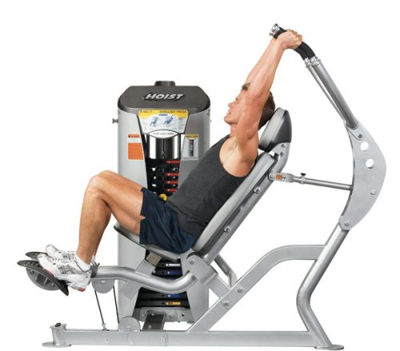
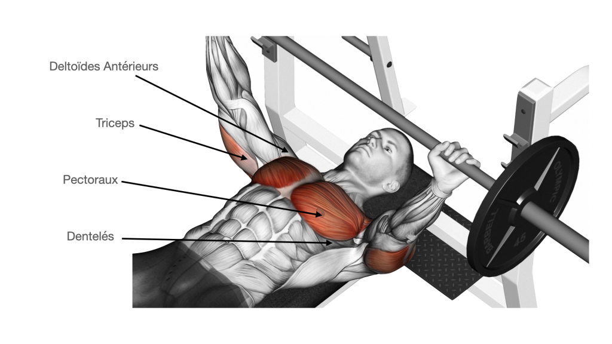

The bodybuilding

The musculation is a very complete sport which mainly aims to develop muscle mass and strength.
However, this sport is also crucial for my mind.
- Schoulder press
- Bench

The schoulder press is a good exercise for
work the shoulders and in order to have greater width.

The bench is a good exercise for working the pectorals
you can work all parts of the pectorals by tilting the bench.